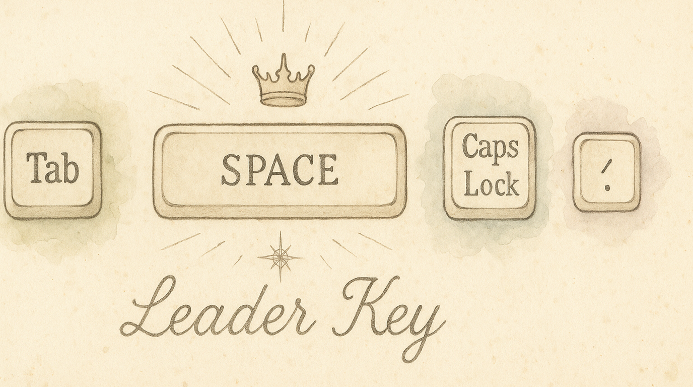

Your Leader key is the starting key for KeyPath layers and sequences. It is Space by default. If Space doesn't feel right, you can switch to Caps Lock, Tab, or Backtick. One change here updates navigation, numpad, symbols, function keys, window snapping, and every other Leader-based layer at once.
The Leader key is the single key you hold to enter the navigation layer. From there, you either use navigation directly (H/J/K/L for arrows) or press a second key to reach a deeper layer (S for symbols, F for function keys, ; for numpad).
Think of it as the front door to all your keyboard shortcuts. Every layer pack that says "Hold Space →" is really saying "Hold your Leader key →."
Leader is different from Hyper. Leader starts a KeyPath layer or sequence. Hyper combines Control, Option, Command, and Shift into one modifier. Apps rarely use all four together, so Hyper creates clean shortcuts that are unlikely to conflict. Caps Lock Remap usually provides Hyper when you hold Caps Lock. A rule may offer Leader or Hyper as its activation method.
| Key | Why you'd pick it |
|---|---|
| ␣ Space (default) | Easiest thumb access. Tap for space, hold for layers. Most people start here. |
| ⇪ Caps Lock | Dedicated modifier — no conflict with typing. Great if you never use Caps Lock anyway. |
| ⇥ Tab | Left pinky access. Tap for Tab, hold for layers. Good for Vim users who want Space untouched. |
| ` Backtick | Upper-left corner. Rarely used in normal typing. Tap for backtick, hold for layers. |
The change takes effect immediately — all layers that use the Leader key update automatically. No need to individually reconfigure each pack.
The Leader key setting is global. Changing it from Space to Caps Lock means:
Pros: Your strongest finger (thumb) does the work. Natural to hold while other fingers move.
Cons: Adds a tiny delay to typing spaces (the tap/hold threshold). Most people don't notice after a day.
Pros: Zero conflict with typing. Feels natural if you're used to Caps Lock as a modifier (Ctrl or Hyper). Dedicated key that you never accidentally press.
Cons: Left pinky does all the work. Slightly less ergonomic for extended layer use.
Pros: Keeps Space completely normal. Left hand activates, right hand navigates. Familiar if you've used Leader in Vim/Neovim.
Cons: Tab key now needs a tap/hold distinction. Can conflict with tab-completion in some apps.
Pros: Rarely used in normal typing (markdown/code aside). No conflict with common shortcuts.
Cons: Awkward reach from the home row. You'll need to hold an unusual key.
If you set Leader to Caps Lock, you probably also want the Caps Lock Remap pack configured with a tap action (like Escape or Backspace). That way:
This is the "Caps Lock does everything" setup that many keyboard enthusiasts use.
The Leader hold delay (default: Long, 300 ms) determines how long you must hold before KeyPath treats the key as your Leader. The Medium preset (200 ms) matches previous behavior. If typing feels sluggish:
Currently the four options (Space, Caps Lock, Tab, Backtick) are the supported leaders. These were chosen for ergonomics and compatibility with the layer system.